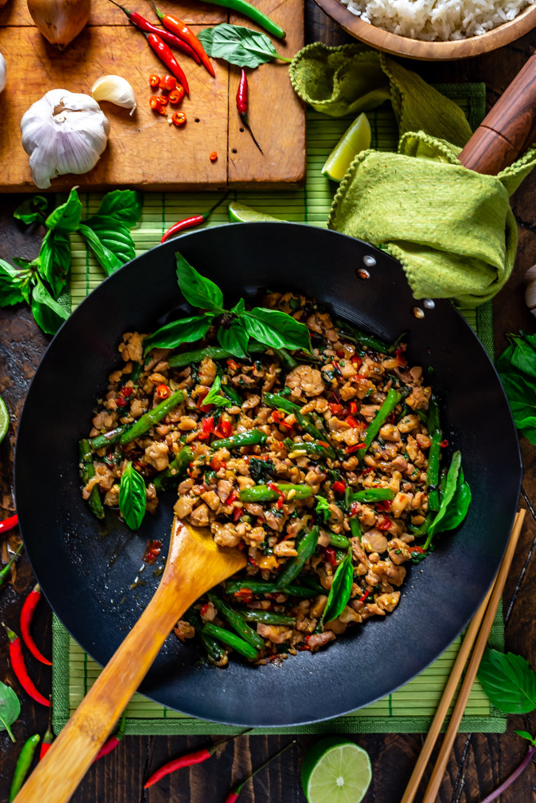

Recipe: Holy Thai Basil

Holy Thai Basil
Thai basil is a dish of stir-fry concocoted with finely chopped or ground chicken, cooked with chile peppers, perhaps some garlic a shallot and maybe a sweet n salty sauce. Then we take the dish and sprinkle on the fresh basil
Ingredients List
- 1/3 cup chicken broth
- 1 tablespoon oyster sauce
- 1 tablespoon soy sauce
- 2 tablespoon fish sauce
- 1 teaspoon white sugar
- 1 teaspoon brown sugar
- 2 tablespoons vegetable oil
- 1 pound skinless, boneless chick thighs, coarsly chopped
- 1/4 cup sliced shallots
- 4 cloves garlic, minced
- 2 tabelspoons minced Thai chilies, Serrano, orr other hot peppers
- 1 cup very thinly sliced fresh basil leaves
- 2 cups hot cooked rice
Directions
- Whisk chicken broth, oyster sauce, soy sauce, fish sauce, white sugar, and brown sugar together in a bowl until well blended.
- Heat large skillet over high heat. Drizzle in oil. Add chicken and stir fry until it loses its raw color, 2 to 3 minutes. Stir in shallots, garlic, and sliced chilies. Continue cooking on high heat until some of the juices start to caramelize in the bottom of the pan, about 2 or 3 more minutes. Add about a tablespoon of the sauce mixture to the skillet; cook and stir until sauce begins to caramelize, about 1 minute.
- Pour in the rest of the sauce. Cook and stir until sauce has deglazed the bottom of the pan. Continue to cook until sauce glazes onto the meat, 1 or 2 more minutes. Remove from heat.
- Stir in basil. Cook and stir until basil is wilted, about 20 seconds. Serve with rice.